2024年湖南省普通高中学业水平选择性考试 生物学
全卷满分100分，考试用时75分钟。
一、选择题：本题共12小题，每小题2分，共24分。在每小题给出的四个选项中只有一项是符合题目要求的。
相关题目：第 1 题 · 第 2 题 · 第 3 题 · 第 4 题 · 第 5 题 · 第 6 题 · 第 7 题 · 第 8 题 · 第 9 题 · 第 10 题 · 第 11 题 · 第 12 题
返回原卷说明与一、单项选择题
题目与已知条件
细胞膜上的脂类具有重要的生物学功能。下列叙述错误的是（ ）
所用高中知识
膜脂的组成与功能；脂肪酸饱和程度与熔点。
分步解析
- 不饱和脂肪酸熔点低，能使膜在低温下保持流动性，耐低温细菌膜脂应富含不饱和脂肪酸，A错误。
- 胆固醇调节动物细胞膜流动性，B正确；糖脂（糖被组成之一）参与细胞识别，C正确；磷脂双分子层是膜的基本支架，D正确。
检查与易错点
饱和脂肪酸链排列紧密、熔点高，适合高温而不是低温环境。
本题来源：doc-hunan-q
返回原卷说明与一、单项选择题
题目与已知条件
抗原呈递细胞（APC）可以通过某类受体识别入侵病原体的独特结构而诱发炎症和免疫反应。下列叙述错误的是（ ）
读题与思路
APC包括巨噬细胞、树突状细胞和B细胞。
分步解析
- APC通过细胞膜上的受体识别病原体，A正确；被吞入的病原体在溶酶体等内体中被识别，受体也可位于溶酶体膜上，B正确。
- 免疫反应过强可损伤自身组织，C正确。
- 浆细胞只分泌抗体，不具有摄取、处理和呈递抗原的功能，不属于APC，D错误。
检查与易错点
B细胞是APC，但由它分化来的浆细胞不是。
本题来源：doc-hunan-q
返回原卷说明与一、单项选择题
题目与已知条件
湿地是一种独特的生态系统，是绿水青山的重要组成部分。下列叙述错误的是（ ）
D.气温和害虫对湿地某植物种群的作用强度与该种群的密度有关
所用高中知识
生态工程原理；密度制约与非密度制约因素。
分步解析
- 人工湿地净化水质、调节气候，A正确；移除富营养化沉积物可减少N、P再释放，B正确；选用适应当地环境的生物体现协调原理，C正确。
- 害虫（生物因素）的作用强度与种群密度有关，但气温等气候因素的作用与密度无关，D错误。
检查与易错点
气温、干旱等非生物因素一般是非密度制约因素。
本题来源：doc-hunan-q
返回原卷说明与一、单项选择题
题目与已知条件
部分肺纤维化患者的肺泡上皮细胞容易受损衰老。下列叙述错误的是（ ）
所用高中知识
细胞衰老的端粒学说与自由基学说；衰老细胞的特征。
分步解析
- 端粒缩短、DNA损伤积累、自由基增多均与细胞衰老有关，A、B、D正确。
- 衰老细胞呼吸速率减慢，线粒体功能减弱，C错误。
检查与易错点
衰老细胞中线粒体数量减少、功能下降，而不是增强。
本题来源：doc-hunan-q
返回原卷说明与一、单项选择题
题目与已知条件
某同学将质粒DNA进行限制酶酶切时，发现DNA完全没有被酶切，分析可能的原因并提出解决方法。下列叙述错误的是（ ）
C.质粒DNA突变导致酶识别位点缺失，更换正常质粒DNA
D.酶切位点被甲基化修饰，换用对DNA甲基化不敏感的限制酶
所用高中知识
限制酶的特异性与活性条件；DNA甲基化对酶切的影响。
读题与思路
题干是“完全没有被酶切”，要找原因与对策不对应的一项。
分步解析
- A：酶失活必然完全不切，换新酶，对应正确。
- C：识别位点因突变缺失，酶无从识别，应换用正常质粒，对应正确。
- D：甲基化可阻断甲基化敏感型限制酶，换用不敏感的酶，对应正确。
- B：温度、pH等条件不适宜一般只降低切割效率，不会使DNA“完全没有”被切；而且增加酶用量并不能弥补反应条件的问题，原因分析与对策都不恰当，B错误。
检查与易错点
“完全不切”与“切割不完全”的原因不同，条件不适宜通常导致后者。
本题来源：doc-hunan-q
返回原卷说明与一、单项选择题
题目与已知条件
微生物平板划线和培养的具体操作如图所示，下列操作正确的是（ ）
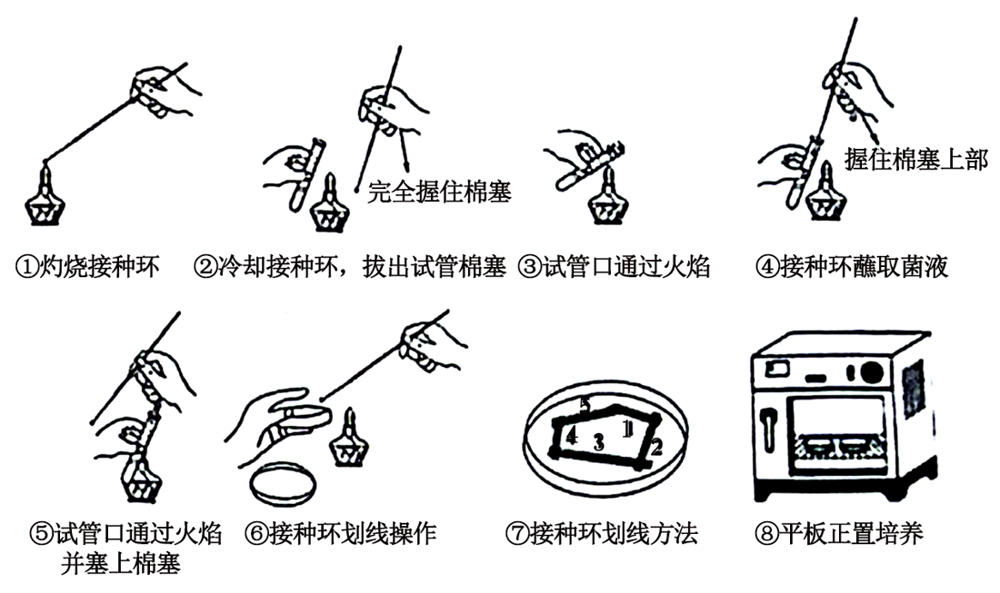
原题图分步解析
- ①灼烧接种环，正确；③试管口通过火焰灭菌，正确；④接种环蘸取菌液（握住棉塞上部、不放下棉塞），正确；⑤试管口再过火焰并塞上棉塞，正确。
- ②拔出棉塞时不应“完全握住棉塞”（易污染棉塞下部），错误；⑥划线时皿盖不能完全打开，应半开，错误；⑦最后一区的划线不能与第一区相连，错误；⑧平板应倒置培养，错误。
- 正确的是①③④⑤。
检查与易错点
平板倒置培养可防止皿盖冷凝水滴落造成污染。
本题来源：doc-hunan-q
返回原卷说明与一、单项选择题
题目与已知条件
我国科学家成功用噬菌体治疗方法治愈了耐药性细菌引起的顽固性尿路感染。下列叙述错误的是（ ）
所用高中知识
病毒的专一性寄生；基因突变的不定向性；协同进化。
分步解析
- 噬菌体具有宿主专一性，A正确；噬菌体与细菌相互选择、协同进化，C正确；噬菌体利用宿主的原料和能量增殖，D正确。
- 基因突变是不定向的，不存在“定向突变的几率变大”，B错误。
本题来源：doc-hunan-q
返回原卷说明与一、单项选择题
题目与已知条件
以黑藻为材料探究影响细胞质流动速率的因素，实验结果表明新叶、老叶不同区域的细胞质流动速率不同，且新叶比老叶每个对应区域的细胞质流动速率都高。下列叙述错误的是（ ）
B.细胞内结合水与自由水的比值越高，细胞质流动速率越快
C.材料的新鲜程度、适宜的温度和光照强度是实验成功的关键
D.细胞质中叶绿体的运动速率可作为细胞质流动速率的指标
分步解析
- 实验比较了新叶/老叶及不同区域，A正确。
- 结合水/自由水比值越高，代谢越弱，细胞质流动越慢，B错误。
- 新鲜材料、适宜温度和光照使代谢旺盛、流动明显，C正确；以叶绿体运动为参照观察细胞质流动，D正确。
检查与易错点
结合水比例升高与抗逆性增强相关，代谢反而减弱。
本题来源：doc-hunan-q
返回原卷说明与一、单项选择题
题目与已知条件
一名甲状腺疾病患者某抗体检测呈阳性，该抗体可与促甲状腺激素（TSH）竞争TSH受体，阻断受体功能。下列叙述错误的是（ ）
所用高中知识
甲状腺激素分级调节与负反馈；自身免疫病。
分步解析
- 抗体阻断TSH受体，甲状腺激素分泌减少，出现怕冷、反应迟钝等甲减症状，A正确。
- TSH受体在甲状腺细胞上，抗体的靶细胞是甲状腺细胞，B错误。
- 甲状腺激素减少，负反馈减弱，TSH分泌增多，C正确；自身抗体攻击自身结构，属于免疫自稳功能异常，D正确。
检查与易错点
TSH由垂体分泌，但其受体在甲状腺细胞上。
本题来源：doc-hunan-q
返回原卷说明与一、单项选择题
题目与已知条件
非酒精性脂肪性肝病是以肝细胞的脂肪变性和异常贮积为病理特征的慢性肝病。葡萄糖在肝脏中以糖原和甘油三酯两种方式储存。蛋白R1在高尔基体膜上先后经S1和S2蛋白水解酶酶切后被激活，进而启动脂肪酸合成基因（核基因）的转录。糖原合成的中间代谢产物UDPG能够通过膜转运蛋白F5进入高尔基体内，抑制S1蛋白水解酶的活性，调控机制如图所示。下列叙述错误的是（ ）
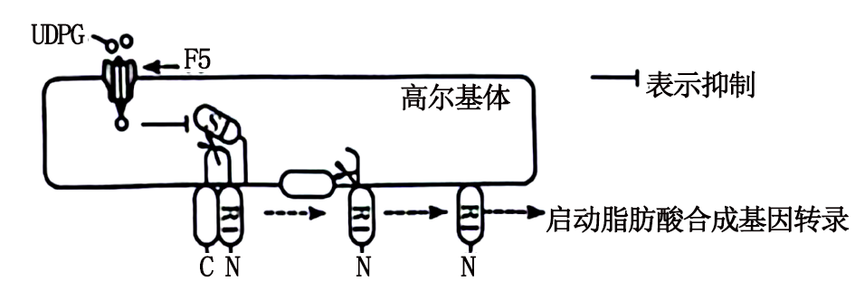
原题图A.体内多余的葡萄糖在肝细胞中优先转化为糖原，糖原饱和后转向脂肪酸合成
B.敲除F5蛋白的编码基因会增加非酒精性脂肪肝的发生率
C.降低高尔基体内UDPG量或S2蛋白失活会诱发非酒精性脂肪性肝病
D.激活后的R1通过核孔进入细胞核，启动脂肪酸合成基因的转录
读题与思路
UDPG→抑制S1→R1不能被激活→脂肪酸合成减少。
分步解析
- 糖原合成时UDPG多，抑制R1激活，脂肪酸合成受抑；糖原饱和后才转向脂肪合成，A正确。
- 敲除F5，UDPG不能进入高尔基体，S1不受抑制，R1激活增多，脂肪酸合成增加，B正确。
- UDPG减少会促进脂肪合成；但S2失活使R1无法被激活，脂肪酸合成减少，不会诱发脂肪肝，C错误。
- R1片段经核孔入核调控核基因转录，D正确。
检查与易错点
R1需S1、S2先后切割才能激活，任一酶失活都会使其不能激活。
本题来源：doc-hunan-q
返回原卷说明与一、单项选择题
题目与已知条件
脱落酸（ABA）是植物响应逆境胁迫的信号分子，NaCl和PEG6000（PEG6000不能进入细胞）皆可引起渗透胁迫。图a为某水稻种子在不同处理下基因R的相对表达量变化，图b为该基因的突变体和野生型种子在不同处理下7天时的萌发率。研究还发现无论在正常还是逆境下，基因R的突变体种子中ABA含量皆高于野生型。下列叙述错误的是（ ）
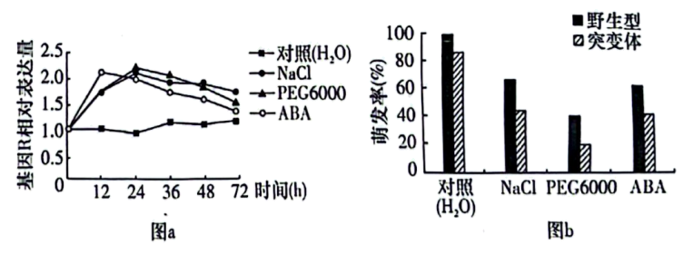
原题图A.NaCl、PEG6000和ABA对种子萌发的调节机制相同
B.渗透胁迫下种子中内源ABA的含量变化先于基因R的表达变化
C.基因R突变体种子中ABA含量升高可延长种子贮藏寿命
所用高中知识
ABA抑制萌发、促进休眠；实验数据分析。
读题与思路
NaCl可进入细胞，PEG6000不能进入细胞，ABA为激素信号，作用方式不同。
分步解析
- NaCl可进入细胞造成离子胁迫兼渗透胁迫，PEG6000只造成胞外渗透胁迫，ABA则是激素信号，三者调节机制不完全相同，A错误。
- ABA可诱导R表达，渗透胁迫先引起ABA含量变化，再引起R表达变化，B合理。
- ABA促进休眠、抑制萌发，含量升高有利于延长贮藏寿命，C合理；突变体ABA含量高，说明R可能抑制ABA合成，D合理。
检查与易错点
三种处理都降低萌发率，但“结果相同”不等于“机制相同”。
本题来源：doc-hunan-q
返回原卷说明与一、单项选择题
题目与已知条件
细胞所处的内环境变化可影响其兴奋性。膜电位达到阈电位（即引发动作电位的临界值）后，才能产生兴奋。如图所示，甲、乙和丙表示不同环境下静息电位或阈电位的变化情况。下列叙述错误的是（ ）
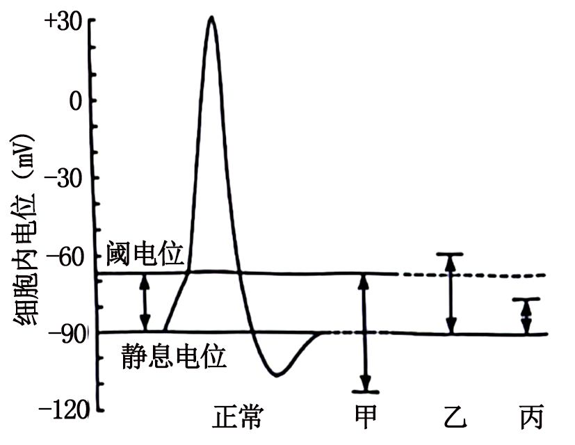
原题图A.正常环境中细胞的动作电位峰值受膜内外钠离子浓度差影响
所用高中知识
静息电位与K⁺外流；动作电位与Na⁺内流；阈电位。
分步解析
- 动作电位峰值取决于Na⁺内流量，受膜内外Na⁺浓度差影响，A正确。
- 甲中静息电位更负（绝对值增大），说明K⁺外流增多，细胞外K⁺浓度低于正常，B正确。
- 刺激使膜电位去极化时少量Na⁺通道已开始开放，达到阈电位后大量Na⁺通道开放形成动作电位，C错误。
- 乙中静息电位与阈电位的差值大于丙，更难兴奋，D正确。
检查与易错点
阈电位是Na⁺通道“大量”开放的临界点，而不是首次开放的时刻。
本题来源：doc-hunan-q
二、选择题：本题共4小题，每小题4分，共16分。在每小题给出的四个选项中，有一项或多项符合题目要求。全部选对的得4分，选对但不全的得2分，有选错的得0分。
相关题目：第 13 题 · 第 14 题 · 第 15 题 · 第 16 题
返回二、不定项选择题（16分）
题目与已知条件
土壤中纤毛虫的动态变化可反映生态环境的变化。某地实施退耕还林后，10年内不同恢复阶段土壤中纤毛虫物种数情况如图所示。下列叙述错误的是（ ）
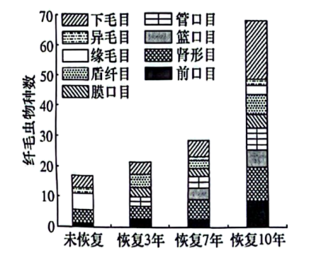
原题图所用高中知识
丰富度统计方法；正反馈；图表信息的使用范围。
分步解析
- 目测估计法只能估计相对数量，统计具体数目应用记名计算法（或计数），A错误。
- 总物种数增加，但个别目的种类数并非一直增加（有波动），B错误。
- 丰富度增加改善土壤环境，环境改善又进一步提高丰富度，属于正反馈，C正确。
- 图中只有物种数，无法得出种群密度的变化，D错误。
检查与易错点
“物种数”反映丰富度，不反映种群密度。
本题来源：doc-hunan-q
返回二、不定项选择题（16分）
题目与已知条件
缢蛏是我国传统养殖的广盐性贝类之一，自身存在抵抗外界盐度胁迫的渗透调节机制。缢蛏体内游离氨基酸含量随盐度的不同而变化，图为缢蛏在不同盐度下鲜重随培养时间的变化曲线。下列叙述错误的是（ ）
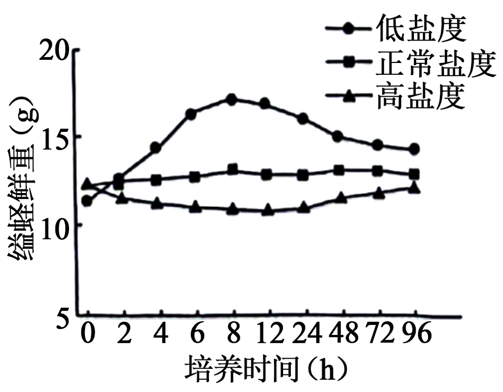
原题图B.低盐度培养8~48 h，缢蛏通过自我调节以增加组织中的溶质含量
分步解析
- 低盐度曲线0~8 h上升、之后下降并趋稳，即先吸水后失水，A正确。
- 8~48 h鲜重下降说明在失水，缢蛏应是减少组织中的溶质（游离氨基酸）以降低渗透压，B错误。
- 溶质越多渗透压越高，C正确；游离氨基酸可经细胞呼吸分解或由呼吸中间产物转化而来，D正确。
检查与易错点
要让组织失水，应降低而不是升高细胞内溶质浓度。
本题来源：doc-hunan-q
返回二、不定项选择题（16分）
题目与已知条件
最早的双脱氧测序法是PCR反应体系中，分别再加入一种少量的双脱氧核苷三磷酸（ddATP、ddCTP、ddGTP或ddTTP），子链延伸时，双脱氧核苷三磷酸也遵循碱基互补配对原则，以加入ddATP的体系为例：若配对的为ddATP，延伸终止；若配对的为脱氧核苷三磷酸（dATP），继续延伸；PCR产物变性后电泳检测。通过该方法测序某疾病患者及对照个体的一段序列，结果如图所示。下列叙述正确的是（ ）
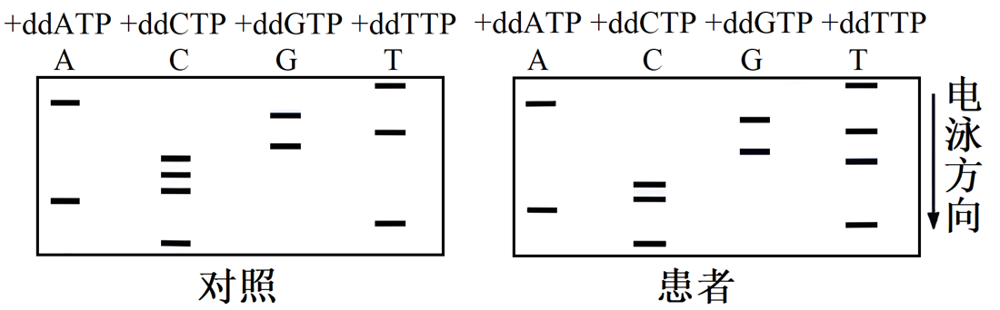
原题图C.5’-CTACCCGTGAT-3’为对照个体的一段序列
读题与思路
片段越短迁移越远（越靠下），从最下方条带读起即子链5′→3′方向。
分步解析
- 测序时只需单一引物延伸出一条子链，A正确。
- 片段越小，迁移越快，B错误。
- 对照组按条带由下到上排列：C、T、A、C、C、C、G、T、G、A、T，即5′-CTACCCGTGAT-3′，C正确。
- 患者由下到上：C、T、A、C、C、T、G、T、G、A、T，第6位C变为T，不是变为G，D错误。
检查与易错点
读序必须从最小片段（迁移最远处）开始，并跨四条泳道依次比较位置。
本题来源：doc-hunan-q
第 16 题
CO₂、O₂、H⁺对呼吸运动的调节（不定项）
返回二、不定项选择题（16分）
题目与已知条件
为研究CO₂、O₂和H⁺对呼吸运动的作用（以肺泡通气为检测指标）及其相互影响，进行了相关实验。动脉血中CO₂分压（PCO₂）、O₂分压（PO₂）和H⁺浓度三个因素中，一个改变而另两个保持正常时的肺泡通气效应如图a，一个改变而另两个不加控制时的肺泡通气效应如图b。下列叙述正确的是（ ）
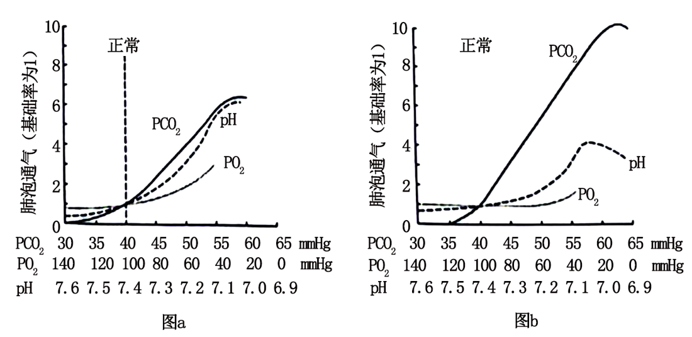
原题图A.一定范围内，增加PCO₂、H⁺浓度和PO₂均能增强呼吸运动
B.pH由7.4下降至7.1的过程中，PCO₂逐渐降低
C.PO₂由60 mmHg下降至40 mmHg的过程中，PCO₂和H⁺浓度逐渐降低
D.CO₂作用于相关感受器，通过体液调节对呼吸运动进行调控
读题与思路
图b中另两个因素不加控制，会随通气变化而改变。
分步解析
- 降低（而非增加）PO₂才增强呼吸，A错误。
- H⁺浓度升高使通气增强，CO₂被大量呼出，PCO₂下降（故图b中pH曲线增幅小于图a），B正确。
- PO₂降低使通气增强，CO₂排出增多，PCO₂和H⁺浓度均降低，C正确。
- CO₂通过体液运输作用于化学感受器，再经神经系统（呼吸中枢）调节呼吸，属于体液—神经调节，仅说“体液调节”不准确，D错误。
检查与易错点
比较图a与图b，差别正是其他两个因素随通气改变而产生的影响。
本题来源：doc-hunan-q
返回三、非选择题（60分）
题目与已知条件
钾是植物生长发育的必需元素，主要生理功能包括参与酶活性调节、渗透调节以及促进光合产物的运输和转化等。研究表明，缺钾导致某种植物的气孔导度下降，使CO₂通过气孔的阻力增大；Rubisco的羧化酶（催化CO₂的固定反应）活性下降，最终导致净光合速率下降。回答下列问题：
（1）从物质和能量转化角度分析，叶绿体的光合作用即在光能驱动下，水分解产生＿＿＿＿；光能转化为电能，再转化为＿＿＿＿中储存的化学能，用于暗反应的过程。
（2）长期缺钾导致该植物的叶绿素含量＿＿＿＿，从叶绿素的合成角度分析，原因是＿＿＿＿（答出两点即可）。
（3）现发现该植物群体中有一植株，在正常供钾条件下，总叶绿素含量正常，但气孔导度等其他光合作用相关指标均与缺钾时相近，推测是Rubisco的编码基因发生突变所致。Rubisco由两个基因（包括1个核基因和1个叶绿体基因）编码，这两个基因及两端的DNA序列已知。拟以该突变体的叶片组织为实验材料，以测序的方式确定突变位点。写出关键实验步骤：①＿＿＿＿；②＿＿＿＿；③＿＿＿＿；④基因测序；⑤＿＿＿＿。
所用高中知识
光反应的物质与能量变化；矿质元素与叶绿素合成；PCR扩增与测序。
读题与思路
K参与酶活性与渗透调节，影响叶绿素合成相关酶及Mg、N等的吸收。
分步解析
- （1）光反应中水光解产生O₂和H⁺（及电子）；光能→电能→ATP和NADPH中活跃的化学能。
- （2）缺钾使叶绿素合成相关酶活性降低；缺钾影响渗透调节和物质运输，进而影响Mg、N等叶绿素组成元素的吸收与运输，叶绿素含量减少。
- （3）两个基因分别位于细胞核与叶绿体中：①分别提取突变体叶片细胞的核DNA和叶绿体DNA；②根据两个基因两端的已知序列分别设计引物；③以提取的DNA为模板进行PCR扩增（并电泳鉴定、回收产物）；④测序；⑤将测得序列与正常基因序列比对，确定突变位点。
答案
（1）O₂和H⁺；ATP和NADPH （2）减少；缺钾使叶绿素合成相关酶的活性降低；缺钾影响渗透调节，进而影响Mg、N等元素的吸收和运输，使叶绿素合成减少 （3）①分别提取叶片细胞的核DNA和叶绿体DNA ②根据两个基因两端的DNA序列设计引物 ③PCR扩增并电泳检测 ⑤与已知（正常）基因序列比对，确定突变位点
检查与易错点
叶绿体基因不在核DNA中，必须分别提取或提取总DNA后用两对引物分别扩增。
本题来源：doc-hunan-q
返回三、非选择题（60分）
题目与已知条件
色盲可分为红色盲、绿色盲和蓝色盲等。红色盲和绿色盲都为伴X染色体隐性遗传，分别由基因L、M突变所致；蓝色盲属常染色体显性遗传，由基因s突变所致。回答下列问题：
（1）一绿色盲男性与一红色盲女性婚配，其后代可能的表型及比例为＿＿＿＿或＿＿＿＿；其表型正常后代与蓝色盲患者（Ss）婚配，其男性后代可能的表型及比例为＿＿＿＿（不考虑突变和基因重组等因素）。
（2）1个L与1个或多个M串联在一起，Z是L上游的一段基因间序列，它们在X染色体上的相对位置如图a。为阐明红绿色盲的遗传病因，研究人员将男性红绿色盲患者及对照个体的DNA酶切产物与相应探针杂交，酶切产物Z的结果如图b，酶切产物BL、CL、DL、BM、CM和DM的结果见下表，表中数字表示酶切产物的量。
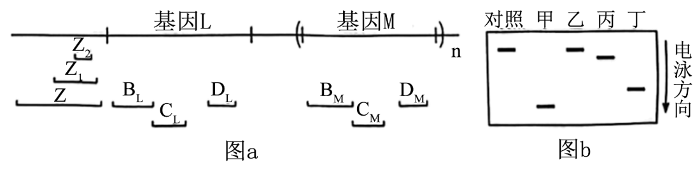
原题图
| 对照 |
15.1 |
18.1 |
33.6 |
45.5 |
21.3 |
66.1 |
| 甲 |
0 |
0 |
0 |
21.9 |
10.9 |
61.4 |
| 乙 |
15.0 |
18.5 |
0 |
0 |
0 |
33.1 |
| 丙 |
15.9 |
18.0 |
33.0 |
45.0 |
21.0 |
64.0 |
| 丁 |
16.0 |
18.5 |
33.0 |
45.0 |
21.0 |
65.0 |
①若对照个体在图a所示区域的序列组成为“Z+L+M+M”，则患者甲最可能的组成为＿＿＿＿（用Z、部分Z，L、部分L，M、部分M表示）。
②对患者丙、丁的酶切产物Z测序后，发现缺失Z1或Z2，这两名患者患红绿色盲的原因是＿＿＿＿。
③本研究表明：红绿色盲的遗传病因是＿＿＿＿。
所用高中知识
伴X隐性与常染色体显性遗传；基因连锁；酶切产物定量分析。
读题与思路
红、绿色盲基因均在X上，女性红色盲两条X均带l，另一位点可正常或也突变。
分步解析
- （1）男性XLmY；红色盲女性可为XlMXlM：子代女儿XLmXlM正常、儿子XlMY红色盲，正常女性∶红色盲男性=1∶1。
- 若女性为XlMXlm：女儿正常（XLmXlM）∶绿色盲（XLmXlm）=1∶1，儿子红色盲（XlMY）∶红绿色盲（XlmY）=1∶1，即正常女性∶绿色盲女性∶红色盲男性∶红绿色盲男性=1∶1∶1∶1。
- 表型正常后代只能是女性XLmXlMss，与Ss男性婚配，儿子XLmY（绿色盲）或XlMY（红色盲），各再有1/2为蓝色盲：红蓝色盲∶绿蓝色盲∶红色盲∶绿色盲=1∶1∶1∶1。
- （2）①甲无BL、CL、DL，L缺失；BM、CM约为对照一半，DM接近对照，说明一个M完整、另一个M只剩含DM的3′端部分；图b中甲的Z条带位置下移（片段变小），为部分Z。缺失应是一段连续区域：从Z的一部分经L一直延伸到第一个M的前段，故组成为“部分Z+部分M+M”。
- ②丙、丁的L、M各酶切产物与对照相同，基因本身完整，但L上游的Z（调控序列）缺失Z1或Z2，导致L、M基因无法正常表达。
- ③红绿色盲可由L、M基因本身的缺失或突变引起，也可由L、M共用的上游调控序列（Z）突变引起。
答案
（1）正常女性∶红色盲男性=1∶1；正常女性∶绿色盲女性∶红色盲男性∶红绿色盲男性=1∶1∶1∶1；红蓝色盲∶绿蓝色盲∶红色盲∶绿色盲=1∶1∶1∶1 （2）①部分Z+部分M+M ②Z（L、M上游的调控序列）发生缺失突变，导致L、M基因无法表达 ③L、M基因发生突变（缺失），或L、M共用的调控序列Z发生突变
检查与易错点
酶切产物量减半说明拷贝数减半，而不是该基因完全缺失。
本题来源：doc-hunan-q
返回三、非选择题（60分）
题目与已知条件
葡萄糖进入胰岛B细胞后被氧化，增加ATP的生成，引起细胞膜上ATP敏感性K⁺通道关闭，使膜两侧电位差变化，促使Ca²⁺通道开放，Ca²⁺内流，刺激胰岛素分泌。进食后，由小肠分泌的肠促胰岛素（GLP-1和GIP）依赖于葡萄糖促进胰岛素分泌，称为肠促胰岛素效应。人体内的GLP-1和GIP易被酶D降解，人工研发的类似物功能与GLP-1和GIP一样，但不易被酶D降解。回答下列问题：
（1）胰岛素需要通过＿＿＿＿运输作用于靶细胞。药物甲只能与胰岛B细胞膜表面特异性受体结合，作用于ATP敏感性K⁺通道，促进胰岛素分泌。使用药物甲后，胰岛B细胞内＿＿＿＿（填“K⁺”“Ca²⁺”或“K⁺和Ca²⁺”）浓度增大；过量使用会产生严重不良反应，该不良反应可能是＿＿＿＿。
（2）与正常人比较，患者A和B的肠促胰岛素效应均减弱，血糖异常升高。使用药物甲后，患者A的血糖得到有效控制，而患者B血糖无改善，患者B可能有＿＿＿＿分泌障碍。
（3）研究发现，与正常人比较，患者A的GLP-1表达量较低但其受体数量无变化，而GIP表达量无变化但其受体数量明显下降。若从①GIP类似物 ②GLP-1类似物 ③酶D激活剂中筛选治疗患者A的候选新药，首选＿＿＿＿（填序号）。若使用该候选药，发生（1）所述不良反应的风险＿＿＿＿（填“大于”“等于”或“小于”）使用药物甲，理由是＿＿＿＿。
所用高中知识
激素的体液运输；胰岛B细胞分泌机制；药物作用靶点分析。
读题与思路
药物甲关闭K⁺通道，K⁺外流减少、Ca²⁺内流增多。
分步解析
- （1）激素通过体液运输。药物甲使ATP敏感性K⁺通道关闭，K⁺外流减少，细胞内K⁺浓度增大；膜电位变化使Ca²⁺通道开放，Ca²⁺内流，细胞内Ca²⁺浓度也增大。药物甲不依赖血糖持续促进胰岛素分泌，过量会引起低血糖。
- （2）药物甲作用于胰岛B细胞促进胰岛素分泌，患者B无效，说明其胰岛素分泌（胰岛B细胞功能）存在障碍。
- （3）患者A的GIP受体减少，补GIP效果差；GLP-1受体正常而GLP-1少，首选②GLP-1类似物（酶D激活剂会加速GLP-1降解，有害）。GLP-1促进胰岛素分泌依赖于葡萄糖，血糖降低后其作用减弱，不易引起低血糖，风险小于药物甲。
答案
（1）体液；K⁺和Ca²⁺；低血糖 （2）胰岛素 （3）②；小于；GLP-1类似物促进胰岛素分泌依赖于葡萄糖，血糖下降后作用减弱，不会持续促进胰岛素分泌
检查与易错点
K⁺通道关闭意味着K⁺留在细胞内，胞内K⁺浓度增大。
本题来源：doc-hunan-q
返回三、非选择题（60分）
题目与已知条件
土壤中的微生物数量与脲酶活性可反映土壤的肥力状况。为研究不同施肥方式对土壤微生物数量和脲酶活性的影响，试验分组如下：不施肥（CK）、有机肥（M）、化肥（NP）、麦秸还田（S）、有机肥+化肥（M+NP）、麦秸还田+化肥（S+NP），其中，NP中氮肥为尿素，麦秸未经处理直接还田，结果如图所示。回答下列问题：
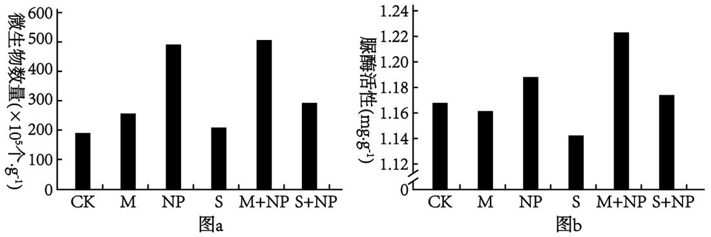
原题图
（1）从生态系统组成成分分析，土壤中的微生物主要属于＿＿＿＿，施用的肥料属于＿＿＿＿。M、NP和S三种施肥方式中，对土壤微生物数量影响最大的是＿＿＿＿。
（2）研究还表明，与CK组相比，S组小麦产量差异不显著。据图a分析，其原因是＿＿＿＿；秸秆可用于生产畜禽饲料和食用菌，畜禽粪便和使用过的食用菌培养基用于还田，该利用方式能降低生态足迹的原因是＿＿＿＿。
（3）下列说法错误的是＿＿＿＿（填序号）。
①合理施肥可以提高氮的循环效率
②施肥可增加土壤微生物数量和脲酶活性
③为提高土壤肥力，短期内施用有机肥比化肥更有效
④施用有机肥时，松土可促进有氧呼吸
所用高中知识
生态系统的组成成分；物质循环与能量多级利用；生态足迹。
分步解析
- （1）土壤微生物主要为分解者；肥料属于非生物的物质和能量；图a中NP组微生物数量最高，对微生物数量影响最大。
- （2）图a中S组微生物数量与CK几乎无差异，未经处理的麦秸难以被及时分解，不能增加土壤中可利用的营养，故产量无显著差异。秸秆→饲料/食用菌→粪便、菌渣还田，实现了物质循环再生和能量多级利用，提高能量利用率，减少对资源与环境的需求，降低生态足迹。
- （3）①合理施肥能提高氮循环效率，正确；②由图b，M、S组脲酶活性低于CK，施肥不一定增加脲酶活性，错误；③图中NP组微生物数量与脲酶活性均高于M组，短期内化肥见效更快，错误；④松土增加土壤氧气，促进微生物有氧呼吸分解有机肥，正确。选②③。
答案
（1）分解者；非生物的物质和能量；NP （2）麦秸还田对土壤微生物数量几乎没有影响，未能增加土壤中的营养成分；实现了物质和能量的多级利用，提高了能量利用率，减少了人类对生态和环境的影响 （3）②③
检查与易错点
判断“施肥可增加……”要逐组看图，不能只看部分组。
本题来源：doc-hunan-q
返回三、非选择题（60分）
题目与已知条件
百合具有观赏、食用和药用等多种价值，科研人员对其进行了多种育种技术研究。回答下列问题：
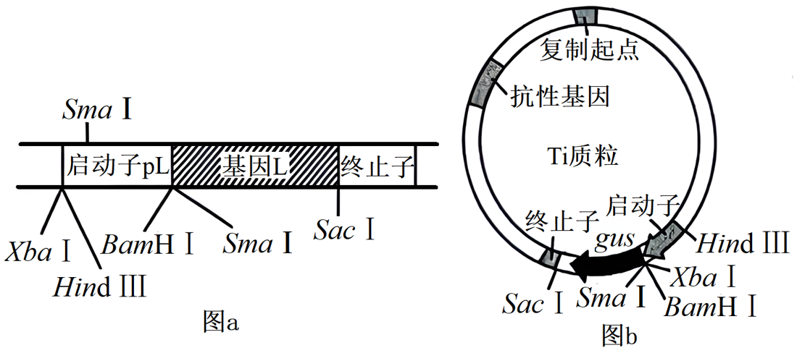
图a、图b
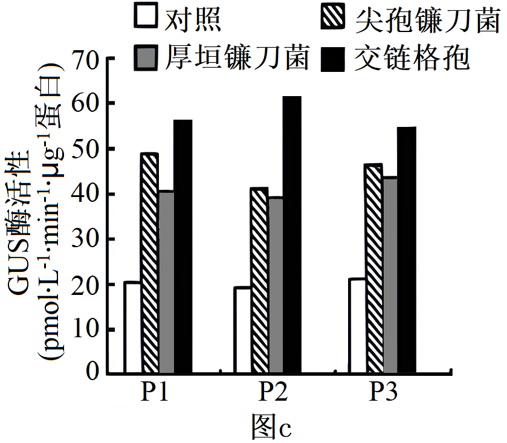
图c
（1）体细胞杂交育种。进行不同种百合体细胞杂交前，先用＿＿＿＿去除细胞壁获得原生质体，使原生质体融合，得到杂种细胞后，继续培养，常用＿＿＿＿（填植物激素名称）诱导愈伤组织形成和分化，获得完整的杂种植株。
（2）单倍体育种。常用＿＿＿＿的方法来获得单倍体植株，鉴定百合单倍体植株的方法是＿＿＿＿。
（3）基因工程育种。研究人员从野生百合中获得一个抵抗尖孢镰刀菌侵染的基因L，该基因及其上游的启动子pL和下游的终止子结构如图a。图b是一种Ti质粒的结构示意图，其中基因gus编码GUS酶，GUS酶活性可反映启动子活性。
①研究病原微生物对L的启动子pL活性的影响。从图a所示结构中获取pL，首先选用＿＿＿＿酶切，将其与相同限制酶酶切的Ti质粒连接，再导入烟草。随机选取3组转基因成功的烟草（P1、P2和P3）进行病原微生物胁迫，结果如图c。由此可知：三种病原微生物都能诱导pL的活性增强，其中＿＿＿＿的诱导作用最强。
②现发现栽培种百合B中也有L，但其上游的启动子与野生百合不同，且抗病性弱。若要提高该百合中L的表达量，培育具有高抗病原微生物能力的百合新品种，简要写出实验思路＿＿＿＿。
所用高中知识
植物体细胞杂交；单倍体育种；限制酶选择；报告基因。
读题与思路
用pL替换Ti质粒中gus上游的启动子，以GUS活性反映pL活性。
分步解析
- （1）用纤维素酶和果胶酶去壁；生长素和细胞分裂素诱导脱分化与再分化。
- （2）花药（花粉）离体培养获得单倍体；用显微镜观察根尖分生区有丝分裂中期细胞的染色体数目（为正常的一半）进行鉴定。
- （3）①pL两侧：上游有XbaⅠ、HindⅢ，下游（pL与L交界）有BamHⅠ；SmaⅠ位于基因L内部及其外侧，不能用。Ti质粒中gus上游启动子两侧为HindⅢ与XbaⅠ/BamHⅠ，选用HindⅢ和BamHⅠ双酶切，既能定向取代原启动子，又保证pL方向正确（XbaⅠ与HindⅢ在pL同侧，不能组合使用）。图c中各组交链格孢处理的GUS活性都最高，诱导作用最强。
- ②利用基因工程（或基因编辑）将百合B中L基因的启动子替换为野生百合的启动子pL，再经植物组织培养获得转基因百合，接种病原菌检测抗性，筛选高抗品种。
答案
（1）纤维素酶和果胶酶；生长素和细胞分裂素 （2）花药离体培养；用显微镜观察根尖有丝分裂中期细胞中的染色体数目 （3）①HindⅢ、BamHⅠ；交链格孢 ②利用转基因技术将百合B中L基因的启动子替换为野生百合L基因的启动子pL，经组织培养获得植株并检测其抗病性
检查与易错点
选限制酶时要保证不破坏目的片段，并与载体上启动子的位置和方向匹配。
本题来源：doc-hunan-q
题源与核验说明
- 2024年新课标湖南高考真题生物试卷 Word版无答案.docx所附湖南卷无答案版；SHA-256：e97b75f632dc13cd5be63ab3449f5783738ca5a5bfffbe03e8967ee8fefa5e3f
- 2024年新课标湖南高考真题生物试卷 Word版含解析.docx所附湖南卷含解析版，仅作交叉核对；SHA-256：4b128719b060895ace5a456213e96fa66e91cd90aae5f9005f1ff3738076ad75
- 所附湖南卷原卷文件逐题转录题干、选项、表格与图。
- 所附湖南卷含解析版参考答案仅在独立推导后交叉核对；用于判定第5题C项文字版本。